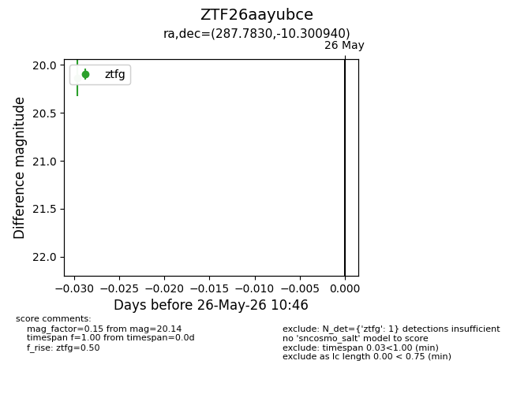
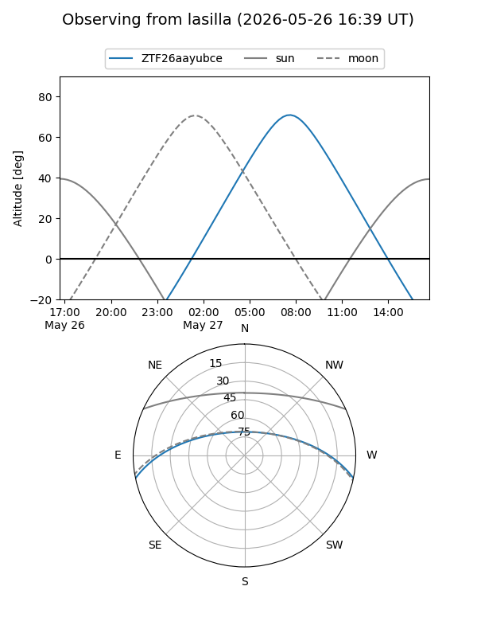
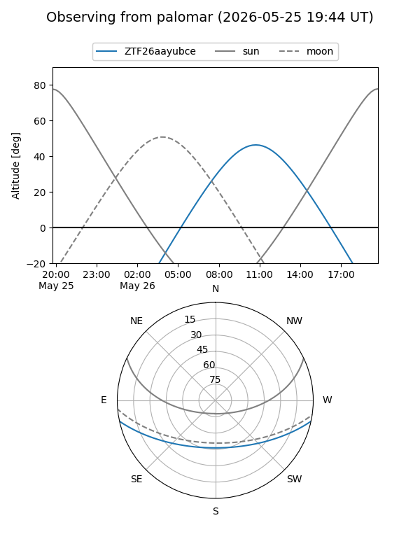

ZTF26aayubce
Target ZTF26aayubce at 2026-05-26 10:48
Aliases and brokers:
lsst-FINK: link
lsst-Lasair: link
lsst-ALeRCE: link
ztf-FINK: link
ztf-Lasair: link
ztf-ALeRCE: link
alt names
ZTF26aayubce (ztf,fink_ztf)
Coordinates:
equatorial (ra, dec) = 287.7830,-10.30094
equatorial (HMS+DMS) = 19:11:07.92,-10:18:03.38
galactic (l, b) = (25.9157,-9.01490)
Flags:
Photometry:
last ztfg=20.14
1 ztfg detections
Lightcurve

Visibility


Additional plots